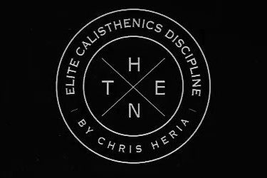
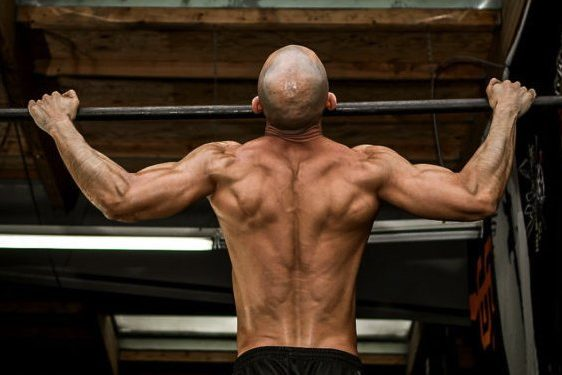
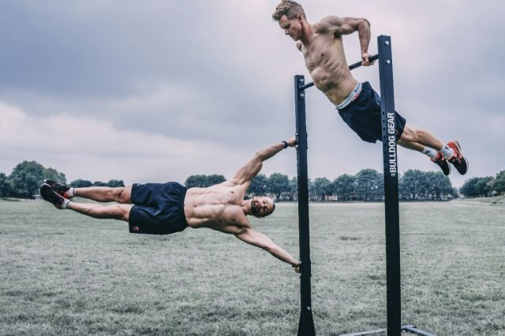
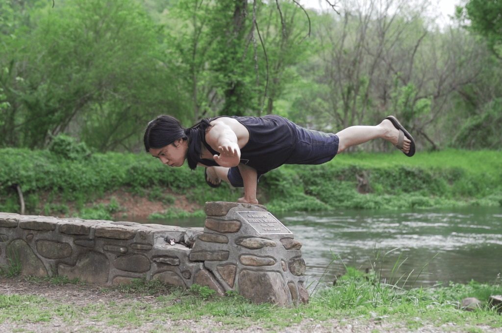
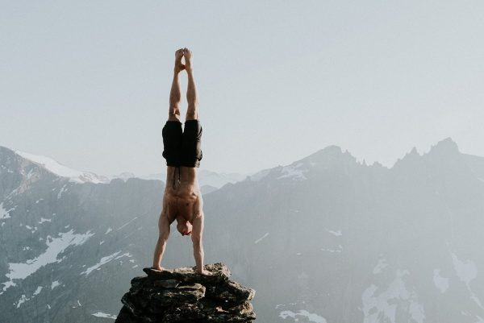
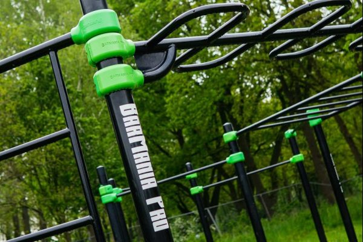
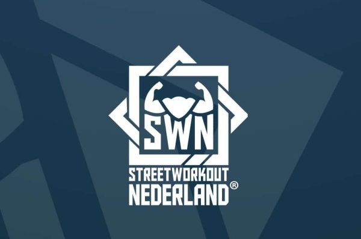
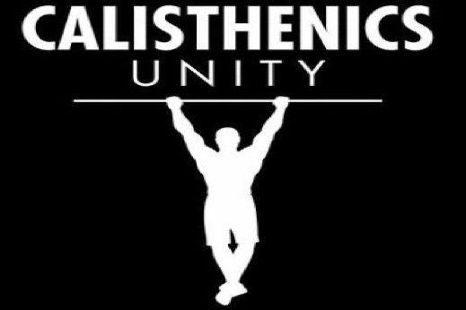
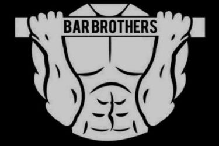

De calisthenics community groeit. De street workout sport wordt steeds populairder, niet alleen in Nederland, maar over de hele wereld. Dit heb je vast terug gezien in het aantal calisthenics Parken in Nederland. Omdat het aantal sporters en trainingslocaties toeneemt, groeit de community ook door. Op deze pagina zie je een overzicht om te zien welke groepen er actief zijn in de sport. Er wordt veel over de ghetto fitness sport gedeeld op social media zoals op YouTube, Instagram, TikTok en Facebook. Daarnaast zie je hieronder op welke websites je terecht kan om meer uit je trainings routines te halen.
Thenx is een van de meest bekende en succesvolle YouTube kanalen over calisthenics met miljoenen volgers. Opgericht door Chris Heria. Wekelijks worden gratis video’s met tips en trainingen online gezet. Daarnaast bestaat het Thenx ‘membership’ om je verder te helpen in de sport.
Frank Medrano is een van de grootheden in de Verenigde Staten op het gebied van calisthenics. Naast zijn veelbekeken YouTube kanaal (meer dan een miljoen volgers) deelt hij ook tips, trainingen en voorziet hij sporters van voedingsadvies, wat volledig veganistisch is. Ook heeft hij betaalde workout- en voedingsplannen.
Calisthenics Movement of Cali Move is een van de best wetenschappelijke onderbouwde initiatieven binnen calisthenics. Het team, bestaande uit Sven en Alex, biedt zowel gratis als betaalde tips om ver te komen in de sport op elk mogelijk vlak: trainen, mobiliteit, voeding en blessurevrij trainen. Daarom een tip om Cali Move te volgen op Instagram en/of YouTube.
Ben je erg actief op Social Media? Grote kans dat je Hampton zijn korte filmpjes bent tegengekomen op YouTube, Instagram of TikTok. Miljoenen mensen volgen zijn kanaal Hybrid Calisthenics. Zijn doel is om mensen te helpen met bewegen en geluk op de lange termijn te creëren met een gezonder lichaam in de vorm van nuchtere en praktische tips.
Calisthenics Bond is de officiële bond van de street workout sport in Nederland. De bond werkt hard verder om de interesse in calisthenics te vergroten, vooral door regelmatig workshops te geven door het hele land heen. Bezoek de website eens als je lid wil worden van de bond en zo wil bijdragen aan de groei van calisthenics in Nederland.
Madbarz is misschien wel de meest bekende calisthenics/Street workout community. Madbarz deelt uitdagende workouts via hun website op allerlei verschillende niveau’s. Sinds enige tijd hebben zij ook een app. Op de app kun je diverse trainingen vinden en deze vervolgens uitvoeren. Deel jouw resultaten vervolgens met andere calisthenics beoefenaars.
BarManiaPro is de ultieme partner in de wereld van calisthenics. Deze producent van outdoor sporttoestellen maakt het mogelijk om het beste uit jezelf te halen in hun kleurrijke calisthenics parken, ook wel fitparken genoemd. BarManiaPro is misschien wel de bekendste producent van trainingslocaties in de buitenlucht. Hun uitrusting is ontworpen met een stoer uiterlijk en aandacht voor detail, duurzaamheid en functionaliteit. BarManiaPro is meer dan alleen maar parken – het is een community met meer dan 27.000 volgers op Instagram.
Street Workout Nederland helpt mensen meer te bewegen. Deze organisatie is niet alleen gericht op het realiseren van meer sportparken in het land, maar ook op het bevorderen van het sociale karakter van de sport. Street Workout Nederland biedt de perfecte combinatie van beweging, creativiteit en gemeenschap, die je motiveert om je grenzen te verleggen in de sport.
Calisthenics Unity is bekend van de inspiratie filmpjes waarbij oprichter Christian Nielsen zijn weg naar volledige fitheid laat zien. Ondertussen deelt hij zijn programma’s met zijn community en draagt hij bij aan de groeiende populariteit van deze sport. Dat komt door de vele inspiratie filmpjes die op diverse social media te vinden zijn.
Bar Brothers Groningen is zonder twijfel de meest bekende calisthenics community van Nederland. De sporters die hier trainen zijn regelmatig in de calisthenics parken rondom Groningen te vinden. Omdat de pagina in het Engels geschreven is zijn er veel sporters wereldwijd die inspiratie uit hun trainingen halen.
